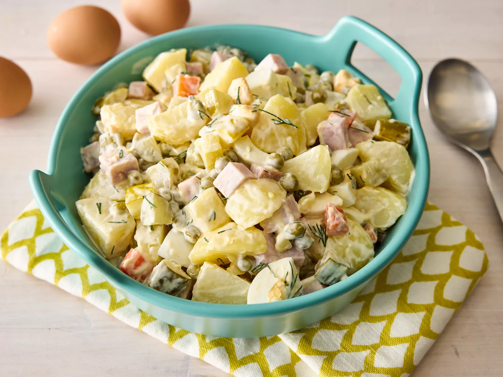

Russian Salad

Description
Russian Salad, also known as Olivier Salad, is a traditional Eastern European dish consisting of diced boiled vegetables and protein bound together with a mayonnaise dressing.
The classic version features potatoes, carrots, peas, eggs, ham, and pickles, all cut into small, uniform cubes.
This no-fuss, one-bowl salad combines potatoes, eggs, pickles, peas, and ham in mayo.Leave out the ham to make this a vegetarian dish.
Ingredients
- 6 potatoes, peeled
- 1 carrot, or more to taste
- 4 whole eggs
- 6 large pickles, cut into cubes
- 1 (15 ounce) can peas, drained
- ½ cup cubed fully cooked ham, or to taste
- 1 tablespoon chopped fresh dill, or to taste (optional)
- ½ cup mayonnaise, or to taste
Steps
- Gather all ingredients. Bring a large pot of water to a boil.
- Add potatoes, bring to a boil, and cook for 5 to 10 minutes. Add carrots and whole eggs and continue boiling until potatoes are tender, 10 to 15 minutes.
- Drain and slightly cool mixture.
- Chop potatoes and carrot. Peel and chop eggs.
- Mix potatoes, carrot, eggs, pickles, peas, ham, and dill together in a large bowl.
- Stir in mayonnaise until salad is evenly coated.
Home